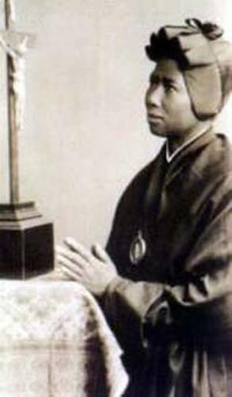
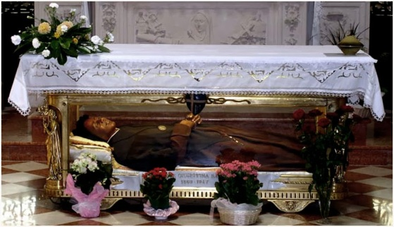

INSTITUTO DE SANTA MADALENA DE CANOSSA

O senhor Michieli, homem religioso e verdadeiramente praticante, deu de presente a Bakhita um crucifixo de prata, que ela descreve o acontecimento com satisfa��o, dizendo: �Ele ao me presentear com o crucifixo, o beijou com muita devo��o. Depois me explicou que era JESUS CRISTO, o FILHO DE DEUS, que morreu crucificado por todos n�s�. Eu me senti muito bem ao lado daquele crucifixo. E posso afirmar:�Impelida por uma for�a misteriosa, eu o olhava, como que �s escondidas, e sentia dentro de mim algo t�o agrad�vel que n�o sabia explicar�.
As Irm�s Canossianas muito prestativas receberam muito bem a crian�a Mimmina e Bakhita.E logo, sem perda de tempo,come�aram a catequizar a jovem Bakhita ensinando-lhe a doutrina e as verdades crist�s, come�ando a lhe falar sobre JESUS, NOSSA SENHORA, o PAI ETERNO e o ESP�RITO SANTO. E assim, lendo e estudando os ensinamentos crist�os, Bakhita sentia-se consciente de como DEUS NOSSO SENHOR lhe conhecia profundamente e lhe amava. ELE verdadeiramente a conduziu ao longo da sua vida, atrav�s daqueles terr�veis caminhos escabrosos do tr�fico humano, dos maus tratos e injustos castigos que enfrentou, invisivelmente segurando-a pela m�o e protegendo-a nas ocasi�es mais cr�ticas e perigosas. Muitas vezes pensando nestes tristes fatos, Bakhita chorava, mas com o cora��o alegre e feliz, porque em tudo, ela via a bondosa M�O DIVINA.
Tempos depois, quando a senhora Maria Turina regressou de seu trabalho na �frica e veio buscar a sua filha e Bakhita, a bab� com determina��o e coragem incomuns, manifestou a sua vontade de permanecer com as Irm�s Canossianas e servir aquele DEUS que lhe havia dado tantas provas de amor. A senhora Turina n�o se conformou, queria que Bakhita tamb�m viajasse com eles porque tinha necessidade dela. Mas Bakhita n�o aceitou o convite de maneira nenhuma. Agora que ela conheceu o verdadeiro DEUS, e a possibilidade de se manter perto dele, para rezar e ador�-lo, n�o queria se afastar dali. A senhora Turina sentiu-se lesada em seus direitos e chegou a reclamar na Justi�a. Durante tr�s dias permaneceu insistente querendo que Bakhita voltasse com ela. O Patriarca de Veneza, Cardeal Domenico Agostini a par de toda a situa��o, quis solucionar o problema. Resolveu fazer uma reuni�o no pr�prio Instituto dos Catec�menos em Veneza. Durante a reuni�o, primeiramente falou o Patriarca dizendo sobre o interesse e a necessidade de encontrar a solu��o certa para o caso. A seguir a senhora Maria Turina Michieli muito nervosa, exp�s o problema reclamando os seus direito sobre Bakhita. O Procurador do Rei ent�o disse: �Na It�lia n�o h� com�rcio de escravos. A partir do momento em que um escravo coloca o p� em solo italiano, automaticamente ele se torna livre. Portanto, eu declaro oficialmente que Bakhita � livre�.
A quest�o estava perfeitamente resolvida pela lei italiana. A senhora Maria Turina sem poder apelar, voltou para a �frica, em Suakin, no Mar Vermelho, somente com sua filha Mimmina. A jovem Bakhita, com 21 anos de idade, sendo inclusive de maior de idade, agora gozando de todos os direitos que a lei italiana lhe assegurava, feliz da vida permaneceu na Casa Religiosa em Veneza.
Disse Bakhita: �Eu amo a senhora Michieli e sinto imensamente ter que abandonar Mimmina. Mas, eu n�o posso deixar esse lugar, porque n�o quero perder nunca, o meu querido e amado DEUS�.
Era o dia 29 de Novembro de 1889, e Bakhita fez a escolha de sua vida:�Deixou tudo por TUDO" (pelo seu querido, amado e poderoso DEUS).

FILHA DE DEUS
As irm�s com satisfa��o, se dedicaram em catequiz�-la, ensinando-lhe os principais acontecimentos da vida de JESUS, assim como os benef�cios da Inicia��o Crist�. Bakhita recebeu os tr�s Sacramentos da Inicia��o Crist�, sendo Batizada e tamb�m ganhou um novo nome: Josephine Bakhita. Na continuidade tamb�m foi Crismada e recebeu o Sacramento da Sagrada Comunh�o Eucar�stica. Era o dia 9 de janeiro de 1890. Estava t�o alegre e feliz, que n�o encontrava palavras para manifestar toda a sua satisfa��o. Desse dia em diante, era f�cil v�-la rezando na Capela da Irmandade, beijando sucessivamente a imagem de JESUS, de NOSSA SENHORA e inclusive a Pia Batismal, onde ela foi Batizada. Com um sorriso de imensa alegria ela dizia: �Aqui me tornei filha de DEUS!�.. E disse tamb�m:�Recebi o Santo Batismo com uma alegria que s� os Anjos poderiam descrever�.
CONSAGRA��O A DEUS
Ela continuou firme com os estudos onde sentiu no interior do seu cora��o, com muita clareza o �chamado para se tornar religiosa e doar-se totalmente ao SENHOR, no Instituto de Santa Madalena de Canossa�.
A 9 de Janeiro de 1890, Josephine Bakhita se �Consagrou para sempre� ao seu DEUS, que ela carinhosamente chamava de "meu Paron!� (Meu Patr�o).
Bakhita sonhava com a convers�o do povo africano e, no dia de sua profiss�o (de f�) religiosa, rezou: �� SENHOR! Ah! se eu pudesse voar l� longe, entre a minha gente e proclamar a todos, em voz alta, a tua bondade. Oh! Quantas almas eu poderia conquistar para Ti! Entre os primeiros, a minha m�e e o meu pai, os meus irm�os, a minha irm� ainda escrava... E todos, todos os pobres negros da �frica. Fa�a, � JESUS, que tamb�m eles te conhe�am e te amem!�.
Por mais de 50 anos, esta humilde Filha da Caridade, uma verdadeira testemunha do Amor de DEUS, dedicou-se �s diversas ocupa��es na Casa da Irmandade em Schio, para onde foi transferida em 1902, e onde sempre com muita alegria e prazer fazia de tudo.
Foi cozinheira, respons�vel pela rouparia, bordadeira, sacrist� e porteira da Unidade Religiosa. E sendo sempre simp�tica e atenciosa ao povo crist�o, todos gostavam dela e admiravam a sua paci�ncia e especial carinho com as crian�as. A sua voz tinha uma tonalidade am�vel, que agradava e reconfortava os pobres, os doentes, e se tornava alegria para as crian�as que visitavam o Instituto. Sem qualquer d�vida, era a felicidade e a pureza do amor de Bakhita, que brotando de seu cora��o apaixonado por DEUS, derramava caudalosamente sobre todos que se aproximavam dela.
DIVULGANDO O VERDADEIRO AMOR
Com o passar dos meses, todos a conheceram verdadeiramente, por sua bondade e delicadeza da sua alma. A sua humildade, a sua simplicidade e o seu constante sorriso, conquistaram o cora��o de todos os habitantes de Schio. As Irm�s a estimavam pela sua inalter�vel afabilidade, pela fineza da sua bondade e pelo seu profundo desejo de fazer com que JESUS fosse mais conhecido e amado.
ELA DIZIA SEMPRE:
�Sede bons, amai a DEUS,
rezai por aqueles que n�o O conhecem. Se, soub�sseis que grande gra�a � conhecer a DEUS!�
Chegou a velhice e com ela, uma doen�a longa e dolorosa, mas a Irm� Bakhita permaneceu firme com o seu testemunho de f� e de bondade. Quando uma pessoa ao lhe visitar, lhe perguntava como se sentia? Sorrindo ela respondia: �Como o Patr�o quer�.
A DESPEDIDA
Na agonia reviveu os abomin�veis anos da sua escravid�o. As vezes chorava e pedia a enfermeira para soltar as suas correntes. (sonhava com aqueles terr�veis tempos de escravid�o).
No momento certo,
a SANT�SSIMA VIRGEM MARIA a livrou de todos os males e sofrimentos. Irm� Bakhita
abriu os olhos e sorrindo viu a M�E DE DEUS bem pr�ximo dela. Suas �ltimas palavras
foram: �NOSSA SENHORA! NOSSA
SENHORA!�.
pr�ximo dela. Suas �ltimas palavras
foram: �NOSSA SENHORA! NOSSA
SENHORA!�.
Faleceu com 78 anos de idade, no dia 1� de Dezembro de 1978, na Casa do Instituto Religioso em Schio, rodeada pela comunidade em prantos e em ora��o. Quando a not�cia alcan�ou as resid�ncias da cidade, uma multid�o de pessoas acorreu � Casa do Instituto para ver, pela �ltima vez, a sua �Santa Irm� Morena�, como respeitosa e amorosamente a chamavam, e pedir-lhe a sua preciosa prote��o l� do c�u. Verdadeiramente Bakhita j� era considerada uma verdadeira Santa. S� lhe faltava mesmo a palavra definitiva e oficial, evidenciando a sua Santidade. Mas, na continuidade isso verdadeiramente aconteceu. Antecipando, em Schio apareceram diversas pessoas declarando que tinham sido curadas de algum mal, pela intercess�o de Bakhita junto a DEUS, suplicando o benef�cio para aquelas pessoas que necessitavam.
O seu corpo foi transladado para a Igreja da Sagrada Fam�lia em Schio, onde foi venerada devotamente por numerosos fi�is que a visitaram durante tr�s dias, desejosos de contempl�-la pela �ltima vez. Milagrosamente os seus membros se conservavam flex�veis durante os tr�s dias, sendo poss�vel mover o seu bra�o e coloc�-lo na cabe�a das crian�as. Por este acontecimento Santa Bakhita revelava mais um segredo da sua santidade, manifestado ali pelo seu corpo humilde, manso, obediente e amoroso. Finalmente o seu corpo incorrupto foi transladado para permanecer vis�vel sob o altar da Igreja da Sagrada Fam�lia em Schio, numa tumba com vidro.
